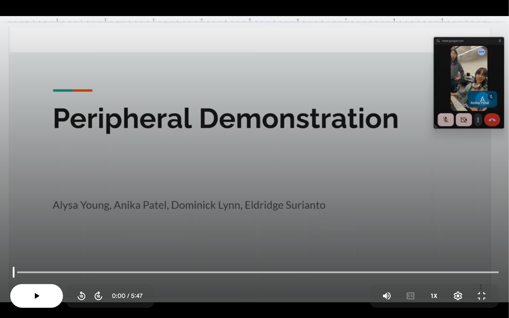

VHDL FPGA LED Metronome on DE10-Standard
Built a modular LED metronome peripheral using VHDL and Quartus Prime with PWM and adjustable BPM via SCOMP memory-mapped IO. Validated with ModelSim and waveform timing.

Wordle Game on Mbed uLCD
Implemented Wordle in C++ on a Cortex-M microcontroller with real-time GPIO input, display rendering, and PWM sound. Strengthened skills in timing and memory constraints.